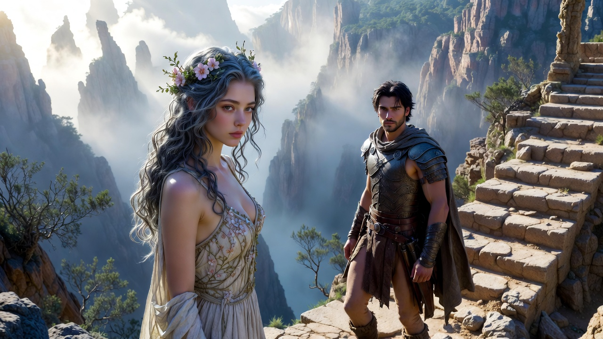
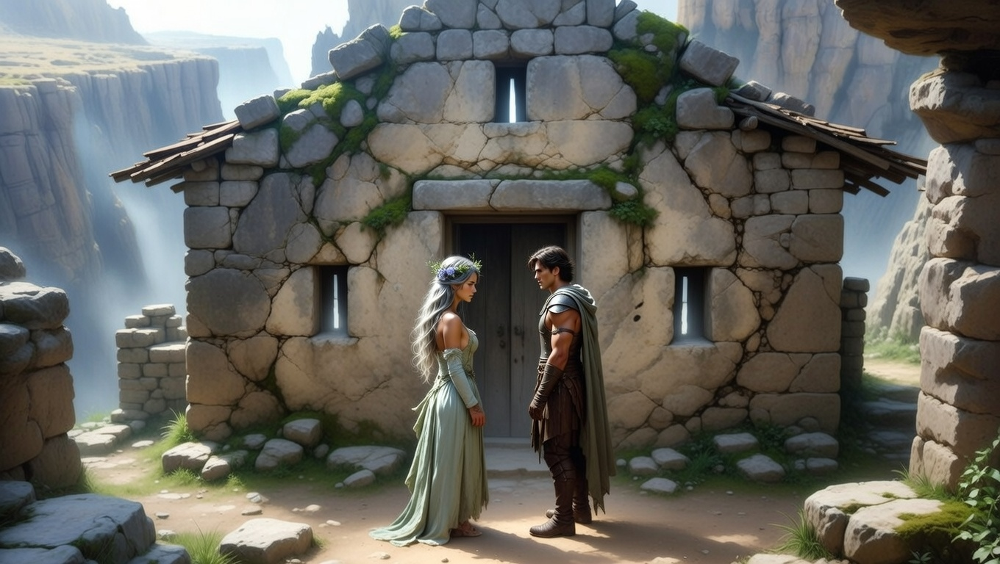
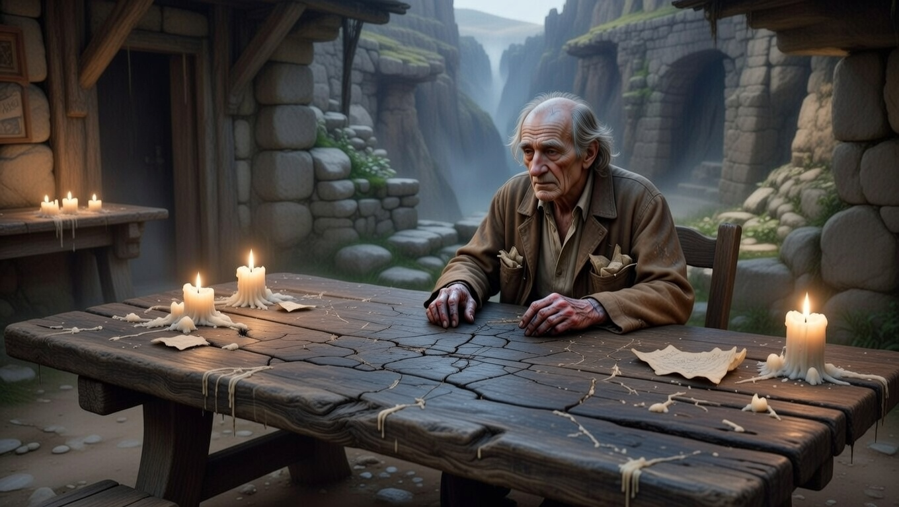
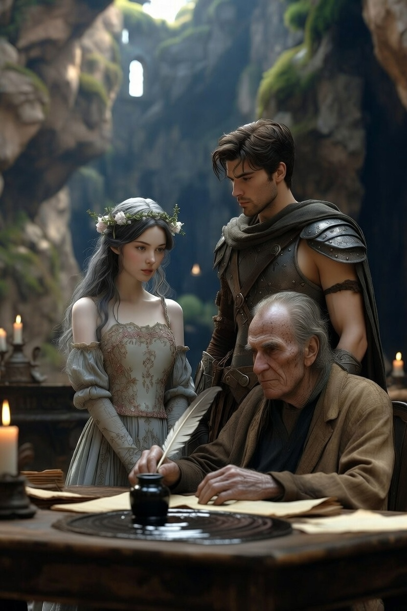
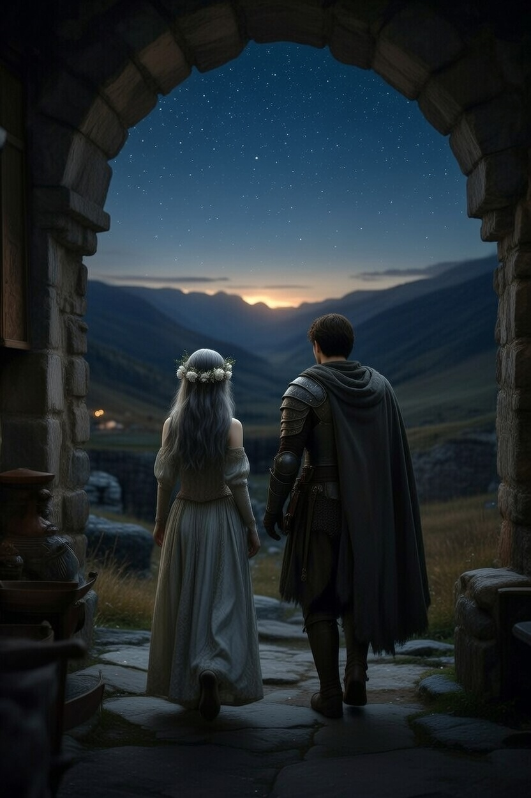

Ajánlom egy kedves barátomnak, aki keresi a pillanatban rejlő örökkévalóságot, és mer hinni a szív órájának szavában.
A fennsík széléről levezető lépcsők kopottak voltak és egyenetlenek, mintha évszázadok viharai és zarándokok léptei koptatták volna simára a követ, miközben a peremén a szél sivító dallamokat fújt, ami visszahallatszott a völgyből, mint egy távoli, figyelmeztető suttogás. Minden fokozatban megbújt a veszély: egy váratlan repedés, ahol a láb elcsúszhatott volna a sima felületen, vagy egy laza kő, ami gurulva követelte volna a bukást. Honóra óvatosan tapogatózott lefelé, ujjai a hideg falba kapaszkodva, míg Alerion mögötte haladt, pajzsa a hátán surrogva a levegőt, szeme pedig a mélyben gomolygó ködfátylat fürkészte, ahol a Tiszta Valóság határai elmosódtak, mint egy félbehagyott álom.

Mire Honóra és Alerion leértek a völgy mélyére, a lábuk sajgott minden lépésnél, mintha tűzcsóvák lüktetnének a lábszárakban, bokáik duzzadtak voltak a folyamatos ereszkedés okozta feszültségtől; a ruhájukat pedig belepte a Tiszta Valóság szürke pora, ami finom, mint a hamu, mégis ragaszkodó, akár egy élő réteg, ami a vállukra telepedett, orrukban keserű, földízű port kavart, emlékeztetve arra, hogy ez a hely nem kegyelmez a gyengéknek. A levegő itt lent sűrűbb volt, tele egyfajta nyomasztó csenddel, amit csak a távoli szél suhogása tört meg, és a napfény, ami alig szűrődött át a magasból, halvány, ezüstös félhomályt teremtett, ahol minden árnyék hosszabbnak tűnt, mint kellene.
Az Őrház pont olyan volt, mint egy magányos bástya az idő tengerében: falai vastagok, durva kőből rakott, mohával benőtt repedésekkel, amelyek mintha sebként mesélték volna a viharok történetét; ablakai kicsik, keskeny résekként, amelyeken keresztül csak részeges fénycsíkok szöktek be, mintha a ház félne a külvilág teljes látásától; belülről pedig a méhviasz és a régi papír illata szökött ki a repedéseken, egy meleg, nosztalgikus aromaként, ami keveredett a porral, és szinte meg lehetett ízlelni a levegőben, mint egy elfelejtett emlék zamatát. A ház ajtaja alacsony volt, félhomályba burkolózó, és ahogy közeledtek, Honóra szíve hevesebben vert, mert tudta: ez a küszöb nem csupán kőből faragott, hanem a sorsok határköve, ahol a múlt súlya nyomja a vállakat.

Bent egy öregember ült egy hatalmas tölgyfa asztalnál, amelynek lapja mélyen be volt karcolva évszázadok használata nyomán, a fa erezete sötét, mint vén patakmedrek. Az asztal körül halvány gyertyafények pislákoltak, viaszcseppekkel borítva a széleket, és a levegőben vibrált a csend, amit csak a toll surrogása törhetett volna meg, ha az öreg éppen írt volna. Nem viselt csillagos köntöst, csak egy kopott, barna zubbony volt rajta, amelynek gallérja kifakult a sok mosástól, zsebei pedig tele gyűrött papírdarabokkal, mintha a történetek darabjai lógnának ki belőlük; és a keze foltos volt a tintától, ujjai görbék, mint a régi pergamenek szélei, bőre pedig vékony, áttetsző, alatta kékes erek tekeregtek, mint elfeledett folyók egy térképen.
Ő volt a Krónikás, az a férfi, akiről a legendák suttogtak, mint egy árnyék, aki nem uralkodik a szavakon, hanem szolgálja őket, aki nem keres dicsőséget, hanem elnyeli a titkokat, hogy ne vesszenek el az idő áradatában.
– Megérkeztetek – mondta anélkül, hogy felnézett volna, szeme továbbra is a pergamenen pihent, mintha a betűk lennének a valódi látogatók, nem a két alak az ajtóban. A szavak lassan potyogtak a levegőbe, súlyosan, mint az őszi gyümölcsök.

A hangja olyan volt, mint a száraz levelek zizegése, rekedt és ropogós, tele évszakok visszhangjával, ami megborzongatta Honóra hátát, mert ebben a zizegésben ott lapult a tél ridegsége és a nyár mulandósága egyszerre.
– Sokan elvéreznek a Tiszta Valóság Mezején – folytatta, mintha csak magának beszélne, de a szavak élesen hasítottak a csendbe, mint egy kés a vászonba. Honóra elképzelte azokat a vándorokat: elesett alakokat, akik a porban fetrengtek, vérük vörös foltokat hagyva a szürke földön, miközben a valóság nyers ereje zúzta össze illúzióikat.
– A legtöbben nem bírják elviselni, hogy a hősök is izzadnak, a tündérek pedig véreznek – tette hozzá halkabban, mintha ez lenne a legfájdalmasabb igazság, amit valaha kimondott, szemei most végre felcsillantak a gyertyafényben, tele egyfajta fáradt megértéssel, ami mélyebb sebeket rejtett, mint bármilyen kardvágás. Alerion érezte, ahogy a szavak a mellkasába marnak, mert ő maga is látta már a hősök verejtékét csillagos éjszakákon, a tündérek könnyeit holdfényben csillogva.
– De ti itt vagytok – fejezte be, és most végre felemelte a tekintetét, szürke szemeikben egy halvány mosoly bujkált, mint egy elrejtett kincs, ami megjutalmazza a kitartást.
Alerion előrelépett, keze ösztönösen a kardja markolatát kereste, ujjaival a hideg fémet simogatva, mert a feszültség még mindig ott vibrált a levegőben, mint egy nem kimondott fenyegetés; de aztán eszébe jutott a fennsík tanítása, azok a halk szavak a szélben, miszerint itt a fegyverek csak árnyékok, a valódi erő pedig a szavakban lakozik, és leengedte a karját, tenyere lassan kinyílt, mintha feladná a harcot a bizalmatlanság ellen. Honóra mellette állt mozdulatlanul, keze a köpenyén pihent, de szíve továbbra is hevesen vert, várva, mi jön ezután.
– Hallottuk, hogy te őrzöd a világ történeteit – mondta Alerion, hangja stabilabbnak tűnt, mint amilyennek érezte magát, miközben a szoba félhomálya szinte elnyelte a szavait, csak a gyertyák pislákolása adott nekik életet.
– Nem őrzöm őket, fiam – válaszolta a Krónikás lágyabban, mintha egy gyermeket oktatna, aki még nem érti a szavak súlyát. Csak lejegyzem, amit hoztok – vette fel a tollát az öreg, mozdulata lassú és precíz, a toll hegye csillogott a fényben, fekete tintacsepp lógott rajta, készen arra, hogy életre keltsen valamit a semmi közepén. Előttük egy hatalmas, üres pergamen feküdt, sima és sárgás, mint egy érintetlen hómező, amelynek szélén halvány vonalak jelezték a már írt fejezetek végét, de a közepén csak a csend uralkodott, tintamentes, várakozó.
– Eddig én írtam a fejezetcímeket – mondta, ujjával végigsimítva a pergamen felső részét, ahol a betűk sötéten virítottak, mint sebhelyek a bőrön. Az Időfalót, a Mérleget, a Tükörvárost – sorolta fel halkan, minden névvel mintha egy világot idézett volna meg: az Időfaló sötét szakadéka, ahol a percek elnyelődtek; a Mérleg hideg pengéi, amelyek ítélkeztek; a Tükörváros végtelen reflexiói, ahol a hazugságok szaporodtak. De ideértetek az üres részhez – sóhajtotta, és a toll hegye most megállt a levegőben, mintha félne a következő vonástól. Itt a tinta megáll – zárta a mondatot, és a szoba mintha még csendesebbé vált volna, a gyertyák lángja is megremegett, mintha tudnák: ez a pillanat a tiéd, de csak ha mersz írni vele.
A csend, ami ezután rájuk telepedett, nem volt üres, hanem telített, mintha a pergamen üressége szívná magába a szavakat, és várná, hogy valaki megtörje a varázsát. A gyertyák lángja most már egyenletesebben égett, a viaszcseppek lassan csorogtak le a gyertyatartókon, mint könnyek egy elnyomott sóhajban, és a szoba falain táncoló árnyékok mintha figyelnék a látogatókat, készen arra, hogy örökre belevésődjenek a kőbe, ha ez a pillanat elnyúlna túl messzire. Honóra érezte, ahogy a levegő egyre nehezebbé válik a mellkasán, a por és a tinta illata most már szinte tapinthatóvá vált, mintha a történelem sűrű ködfátyla ölelné körül őket, várva a döntést, ami mindent megváltoztathat.

– Ha itt befejezzük – kérdezte Alerion, hangja mélyen rezonált a szobában, mint egy harangütés egy templomhajóban, szavai pedig szinte tapogatóztak a levegőben, keresve a választ, mielőtt még befejezné a mondatot –, mi lesz az utolsó mondat?
A kérdés lebegve lógott közöttük, mint egy kifeszített híd, amitől függött a további útjuk, és Alerion szemei a Krónikás arcát fürkészték, keresve benne a jeleket: egy remegő szemöldököt, egy elfojtott mosolyt, ami elárulná, hogy ez a pillanat már ezerszer lejátszódott itt, ugyanezzel a pergamennel.
A Krónikás a tollát a tinta felett tartotta, a hegye csak centikre lebegett a fekete folyadék felszínétől, ahol a tinta hullámai finoman fodrozódtak, mintha élő lenne, készen arra, hogy elnyelje a következő szót, vagy visszautasítsa, ha az nem illik a minta alá. Az öreg ujjaiban finom remegés futott végig, nem félelemből, hanem abból a tudatból, hogy minden választás egy végződést szül, még ha az csak átmeneti is. – Valami olyasmi, hogy „És boldogan éltek, amíg meg nem haltak, őrizve a Szivárvány-tó emlékét” – mondta lassan, a szavakat szinte ízlelgetve, mintha egy régi receptet mondana fel, amit túl sokszor kóstolt már. Biztonságos. Szép. Végleges – tette hozzá, és a hangjában ott bujkált egy halvány keserűség, ami emlékeztet a mulandóságra, még a legszebb történetekben is.
A mondat visszhangzott a szobában, és Honóra érezte, ahogy egy hideg fuvallat simítja végig a bőrét, mintha a Szivárvány-tó vize loccsanna fel a távolból, hozva magával a tó kékes csillogását, a hullámok suttogását, amit most már csak emlékként őrizhettek. De ez az emlék nem volt elég; túl puha, túl sima ahhoz, hogy kitöltse a szívükben tátongó űrt, amit az útjuk során vájtak ki magukba.
Honóra elmosolyodott, ajkai finoman görbültek felfelé, de a mosoly mögött ott lapult a kimerültség árnyéka, a völgy poros levegője, ami még mindig ragadt a torkában; és a szemeiben a fáradtság ellenére felcsillant egy olyan fény, ami nem mágiából, hanem dacból fakadt, egy vad, lázadó szikra, ami a Tiszta Valóság rideg fényében sem huny ki, hanem éppen ott táplálkozik a nyers valóságból, a sebhelyekből és a vereségekből. – De mi nem akarunk „meg nem halni” – mondta, hangja lágy, de acélos, mint egy pengében rejtőző bársony, szavai pedig szinte simultak a levegőbe, kitöltve a csendet egyfajta meleg lázadással. Mi élni akarunk. Minden egyes bizonytalan percet, amit a Tiszta Valóság ad – folytatta, és most a tekintete Alerionra siklott, keresve benne a visszhangot, azt a csendes megerősítést, ami erősebb minden varázslatnál. Alerion? – kérdezte halkan, a név szinte simogatóan csengett, tele közös emlékekkel: a tóparti éjszakákkal, a viharok szélén tett esküvel, a porban vívott harcokkal.
A lovag bólintott, mozdulata lassú és megfontolt, vállai kissé megereszkedtek a fáradtságtól, de a szemeiben ott égett ugyanaz a tűz, ami Honóráét lobbantotta fel; keze, ami korábban a kard markolatát kereste, most lazán pihent az oldalán, nyitott tenyérrel, jelképezve, hogy ez a harc nem acéllal, hanem szavakkal vívódik. – Krónikás, tedd le a tollat – mondta, hangja stabil, mint egy horgony a viharban, szavai pedig súlyosan ültek a levegőben, elzárva az utat a végső mondat elől. A mi történetünk nem fér rá erre a pergamenre – folytatta, és most egy pillanatra a saját kezére nézett, arra a kézre, ami kardot forgatott, sebet kötött, és most talán tollat fog, ha kell. Mert a mienk nem egy pontban végződik, hanem egy vesszőben, ami után mindig jön egy „és aztán” – fejezte be, és a szavakban ott vibrált a végtelen lehetőség, a völgyen túli utak ígérete, ahol minden lépés új mondatot szül, új kockázatot, új csodát.
Az öregember elégedetten sóhajtott, levegője lassan hagyta el az ajkait, mint egy megkönnyebbült szellő, ami végre elhessegeti a nehéz ködöt; arcán finom ráncok mélyültek el a szemzugokban, de ezúttal nem a fájdalomtól, hanem egy ritka örömtől, amit csak azok láthatnak, akik túléltek egy történetet, hogy újat kezdhessenek. És letette a lúdtollat, a toll hegye halkan koppant az asztal széléhez, a tinta pedig most már mozdulatlanul csillogott a fiolában, pihenve, várva a következő vándort. – Tudtam, hogy ezt mondjátok – mondta halkan, hangjában egyfajta bölcsesség, ami évszázadok porából szövődött, szemei most melegebben csillogtak a gyertyafényben. – A legtöbben a halhatatlanságot választják a könyvlapokon – folytatta, és egy pillanatra a tekintete a pergamenre siklott, arra az üres térre, ami tele van elhallgatott sorsokkal, porosodó hősökkel, akik biztonságban pihennek a betűk között. – De ti a szabadságot választjátok a porban – tette hozzá, és a szavakban ott bujkált egy csendes büszkeség, mintha ő maga is része lenne ennek a választásnak, egy ősi szövetséges, aki már túl sokszor látta a végét, hogy ne ünnepelje a folytatást.
A pillanat után a szoba mintha fellélegzett volna, a falak árnyékai megnyúltak, a gyertyák lángja pedig egyenletesebben égett, mintha a döntésükkel enyhült volna a nyomás, ami eddig a levegőt sűrítette. Ekkor a Krónikás előhúzott egy fiókból egy apró, jelentéktelennek tűnő fémtárgyat, mozdulata lassú és gondos, mintha egy régi kincset emelne ki a porból; a fiók nyikorgott halkan, mint egy elfeledett ajtó, és a tárgy, ami előkerült, tompán csillogott a fényben, egyszerű, de titokzatos, tele karcolásokkal, amik talán térképek voltak, vagy csak az idő fogai. Egy Iránytűt, aminek nem volt tűje, csak egy üres kör, ahol a mágnes helyett a semmi lebegve várt, és a ház kerete bronzból faragott, repedésekkel, amik mintha történeteket meséltek volna azokról, akik előtte tartották.
– Vigyétek ezt – mondta az öreg, és a tárgyat óvatosan csúsztatta az asztal lapjára, ujjai finoman simogatták a felületét, mintha búcsúznának tőle, de valójában átadnák a súlyát. Nem északra mutat, és nem a cél felé – magyarázta halkan, szemei most a két látogatóra szegeződtek, tele egyfajta csendes bizalommal, ami ritka ajándék egy ilyen helyen. Arra mutat, ahol a legnagyobb szükség van rátok – folytatta, és a szavakban ott rejtőzött a bölcsesség, hogy az út nem egyenes, hanem kanyargós, tele váratlan fordulatokkal, ahol a szükség a legjobb iránytű. Ez nem mágia, csak egy emlékeztető: az út nem ér véget a völgyben – tette hozzá, és most egy halvány mosoly suhant át az arcán, mint egy napsugár a porban. Onnantól kezdve ti lesztek a saját krónikásaitok – zárta a mondatot, és a szavak súlyosan ültek a levegőben, felszabadítva őket a pergamen rabságából, átadva nekik a tollat, amit magukkal kell vinniük a világba.

Ahogy felálltak, a székek lábai halkan surrogtak a kőpadlón, a lépteik pedig visszhangzottak a szobában, mint egy végső búcsú, és a Krónikás csak figyelte őket, mozdulatlanul, mint egy ősi fa, ami tanúja a szelek változásának. Ahogy kiléptek az Őrház túlsó ajtaján, a fa nyikorgott a zsanérjain, és a hideg esti levegő azonnal megölelte őket, mossa le a tinta illatát a bőrükről; a völgy felett az égbolt sötétkékbe fordult, mély, bársonyos árnyalattal, ahol a nap utolsó sugarai még éppen megcsillantak a távoli hegyeken, de már elhaltak a csillagok előli harcban. A csillagok nem súgtak többé titkokat, nem villóztak fenyegetően vagy csábítóan, mint a fennsíkon; egyszerűen csak ott voltak, halkan ragyogva, mint régi barátok, akik nem ígérnek semmit, csak jelen vannak, készen arra, hogy megvilágítsák az utat, amit mostantól ők maguk írnak.